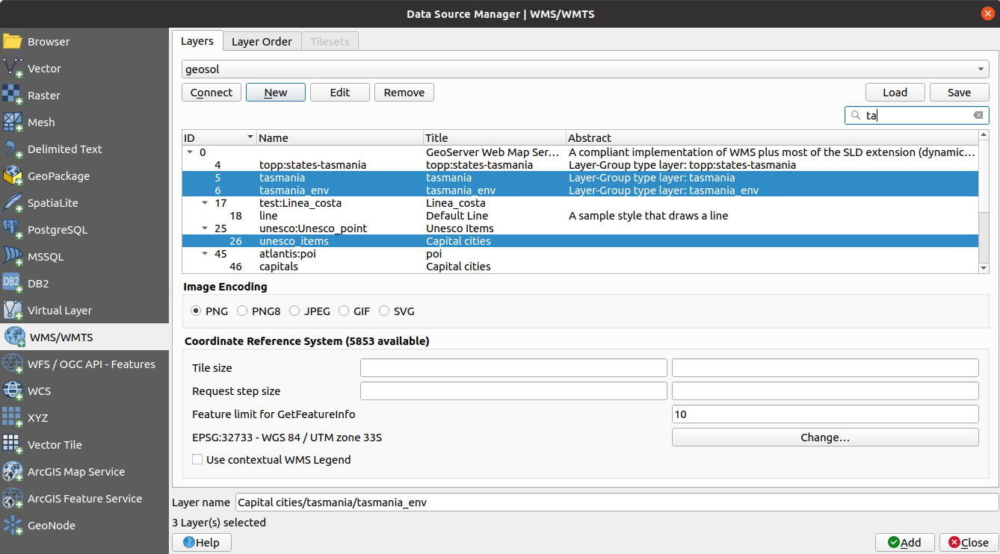

The Open Geospatial Consortium (OGC) is an international organization with membership of more
than 300 commercial, governmental, nonprofit and research organizations worldwide.
Its members develop and implement standards for geospatial content and services,
GIS data processing and exchange.
Describing a basic data model for geographic features, an increasing number
of specifications are developed by OGC to serve specific needs for interoperable
location and geospatial technology, including GIS. Further information
can be found at https://www.opengeospatial.org/.
Important OGC specifications supported by QGIS are:
OGC services are increasingly being used to exchange geospatial data between
different GIS implementations and data stores. QGIS can deal with the above
specifications as a client, being SFS (through support of the PostgreSQL
/ PostGIS data provider, see section PostGIS Layers).
You can also share your maps and data through the WMS, WMTS, WFS, WFS-T and WCS protocols
using a webserver with QGIS Server, UMN MapServer or
GeoServer installed.
QGIS currently can act as a WMS client that understands WMS 1.1, 1.1.1
and 1.3 servers. In particular, it has been tested against publicly accessible
servers such as DEMIS.
A WMS server acts upon requests by the client (e.g., QGIS) for a raster map
with a given extent, set of layers, symbolization style, and transparency.
The WMS server then consults its local data sources, rasterizes the map,
and sends it back to the client in a raster format. For QGIS, this format would
typically be JPEG or PNG.
WMS is generically a REST (Representational State Transfer) service rather
than a full-blown Web service. As such, you can actually take the URLs
generated by QGIS and use them in a web browser to retrieve the same images
that QGIS uses internally. This can be useful for troubleshooting, as there
are several brands of WMS server on the market and they all have their
own interpretation of the WMS standard.
WMS layers can be added quite simply, as long as you know the URL to access
the WMS server, you have a serviceable connection to that server, and the
server understands HTTP as the data transport mechanism.
Additionally, QGIS will cache your WMS responses (i.e. images) for 24h as long
as the GetCapabilities request is not triggered. The GetCapabilities request is
triggered everytime the Connect button in the Add Layer(s) from WMS(T) Server
dialog is used to retrieve the WMS server capabilities. This is an automatic
feature meant to optimize project loading time. If a project is saved with a WMS layer,
the corresponding WMS tiles will be loaded from the cache the next time the project is opened
as long as they are no older than 24H.
QGIS can also act as a WMTS client. WMTS is an OGC standard for distributing
tile sets of geospatial data. This is a faster and more efficient way of
distributing data than WMS because with WMTS, the tile sets are pre-generated,
and the client only requests the transmission of the tiles, not their
production. A WMS request typically involves both the generation and
transmission of the data. A well-known example of a non-OGC standard for
viewing tiled geospatial data is Google Maps.
In order to display the data at a variety of scales close to what the user
might want, the WMTS tile sets are produced at several different scale levels
and are made available for the GIS client to request them.
This diagram illustrates the concept of tile sets:
The two types of WMTS interfaces that QGIS supports are via Key-Value-Pairs
(KVP) and RESTful. These two interfaces are different, and you need to specify
them to QGIS differently.
In order to access a WMTS KVP service, a QGIS user must open the WMS/WMTS interface
and add the following string to the URL of the WMTS tile service:
For testing the topo2 layer in this WMTS works nicely. Adding this string indicates
that a WMTS web service is to be used instead of a WMS service.
The RESTful WMTS service takes a different form, a straightforward URL.
The format recommended by the OGC is:
{WMTSBaseURL}/1.0.0/WMTSCapabilities.xml
This format helps you to recognize that it is a RESTful address. A RESTful WMTS is
accessed in QGIS by simply adding its address in the WMS setup in the URL field of
the form. An example of this type of address for the case of an Austrian basemap is
https://maps.wien.gv.at/basemap/1.0.0/WMTSCapabilities.xml.
Note
You can still find some old services called WMS-C. These services are quite similar
to WMTS (i.e., same purpose but working a little bit differently). You can manage
them the same as you do WMTS services. Just add ?tiled=true at the end
of the url. See https://wiki.osgeo.org/wiki/Tile_Map_Service_Specification for more
information about this specification.
When you read WMTS, you can often think WMS-C also.
Name: A name for the connection. This name will be used in
the Server Connections drop-down box so that you can distinguish it from
other WMS servers.
URL: URL of the server providing the data. This must be a
resolvable host name – the same format as you would use to open a telnet
connection or ping a host, i.e. the base URL only.
For example, you shouldn’t have fragments such as request=GetCapabilities
or version=1.0.0 in your URL.
Authentication (optional): using a stored configuration or a basic authentication with
Username and Password.
Warning
Entering username and password in the Authentication
tab will keep unprotected credentials in the connection configuration.
Those credentials will be visible if, for instance, you shared the
project file with someone. Therefore, it’s advisable to save your
credentials in a Authentication configuration instead
(configurations tab).
See Authentication System for more details.
HTTP Referer
DPI-Mode: Available options are all, off, QGIS,
UMN and GeoServer
Ignore GetMap/GetTile URI reported in capabilities:
if checked, use given URI from the URL field above.
Ignore GetFeatureInfo URI reported in capabilities:
if checked, use given URI from the URL field above.
Ignore axis orientation (WMS 1.3/WMTS)
Ignore reported layer extents: because the extent
reported by raster layers may be smaller than the actual area which can
be rendered (notably for WMS servers with symbology which takes more space
than the data extent), check this option to avoid cropping raster layers
to their reported extents, resulting in truncated symbols on the borders
of these layers.
Invert axis orientation
Smooth pixmap transformation
Press OK
Once the new WMS server connection has been created, it will be preserved for
future QGIS sessions.
If you need to set up a proxy server to be able to receive WMS services from the
internet, you can add your proxy server in the options. Choose
Settings ► Options and click on the Network tab.
There, you can add your proxy settings and enable them by setting Use proxy for web access. Make sure that you select the correct
proxy type from the Proxy type drop-down menu.
Once you have successfully filled in your parameters, you can use the
Connect button to retrieve the capabilities of the selected server.
This includes the image encoding, layers, layer styles and projections.
Since this is a network operation, the speed of the response depends on the
quality of your network connection to the WMS server.
While downloading data from the WMS server, the download progress is
visualized in the lower left corner of the main QGIS dialog.
Your screen should now look a bit like Fig. 19.3,
which shows the response provided by a WMS server.

Fig. 19.3 Dialog for adding a WMS server, with filter on available layers
The upper part of the Layers tab of the dialog shows a tree
structure that can include layer groups embedding layers with their associated
image style(s) served by the server.
Each item can be identified by:
an ID
a Name
a Title
and an Abstract.
The list can be filtered using the widget in the top right corner.
Image Encoding
The Image encoding section lists the formats that are supported
by both the client and server. Choose one depending on your image accuracy
requirements.
Tip
Image Encoding
You will typically find that a WMS server offers you the choice of JPEG
or PNG image encoding. JPEG is a lossy compression format, whereas PNG
faithfully reproduces the raw raster data.
Use JPEG if you expect the WMS data to be photographic in nature and/or
you don’t mind some loss in picture quality. This trade-off typically
reduces by five times the data transfer requirement compared with PNG.
Use PNG if you want precise representations of the original data and you
don’t mind the increased data transfer requirements.
Options
The Options area of the dialog provides means to configure the WMS requests.
You can define:
Tile size if you want to set tile sizes (e.g., 256x256)
to split up the WMS request into multiple requests.
The Request step size
The Feature limit for GetFeatureInfo defines the maximum number
of GetFeatureInfo results from the server.
If you select a WMS from the list, a field with the default projection provided
by the web server appears. Press the Change… button to replace
the default projection of the WMS with another CRS supported by the WMS server.
Finally you can activate Use contextual WMS Legend if the
WMS Server supports this feature. Then only the relevant legend for your current
map view extent will be shown and thus will not include legend items for items
you can’t see in the current map.
At the bottom of the dialog, a Layer name text field displays the
selected item’s Title. You can change the name at your will.
This name will appear in the Layers panel after you pressed the
Add button and loaded the layer(s) in QGIS.
You can select several layers at once, but only one image style per layer.
When several layers are selected, they will be combined at the WMS server
and transmitted to QGIS in one go, as a single layer.
The default name is a slash (/) separated list of their original title.
Layer Order
The Layer Order tab lists the selected layers available from the
current connected WMS server.
WMS layers rendered by a server are overlaid in the order listed in the
Layers tab, from top to bottom of the list.
If you want to change the overlay order, you can use the Up
and Down buttons of the Layer Order tab.
Transparency
The Global transparency setting from the
Layer Properties is hard coded to be always on, where available.
Tip
WMS Layer Transparency
The availability of WMS image transparency depends on the image encoding
used: PNG and GIF support transparency, whilst JPEG leaves it unsupported.
Coordinate Reference System
A coordinate reference system (CRS) is the OGC terminology for a QGIS projection.
Each WMS layer can be presented in multiple CRSs, depending on the capability of
the WMS server.
To choose a CRS, select Change… and a dialog similar to
the one shown in Fig. 10.3 will appear.
The main difference with the WMS version of the dialog is that only
those CRSs supported by the WMS server will be shown.
you are able to browse through the Tilesets tab given by the server.
Additional information like tile size, formats and supported CRS are listed in
this table. In combination with this feature, you can use the tile scale slider
by selecting View ► Panels ( or Settings
► Panels), then choosing Tile Scale Panel. This gives you the
available scales from the tile server with a nice slider docked in.
Once you have added a WMS server, and if any layer from a WMS server is queryable,
you can then use the Identify tool to select a pixel on
the map canvas. A query is made to the WMS server for each selection made.
The results of the query are returned in plain text. The formatting of this text
is dependent on the particular WMS server used.
Format selection
If multiple output formats are supported by the server, a combo box with supported
formats is automatically added to the identify results dialog and the selected
format may be stored in the project for the layer.
GML format support
The Identify tool supports WMS server response
(GetFeatureInfo) in GML format (it is called Feature in the QGIS GUI in this context).
If “Feature” format is supported by the server and selected, results of the Identify
tool are vector features, as from a regular vector layer. When a single feature
is selected in the tree, it is highlighted in the map and it can be copied to
the clipboard and pasted to another vector layer. See the example setup of the
UMN Mapserver below to support GetFeatureInfo in GML format.
# in layer METADATA add which fields should be included and define geometry (example):"gml_include_items""all""ows_geometries""mygeom""ows_mygeom_type""polygon"# Then there are two possibilities/formats available, see a) and b):# a) basic (output is generated by Mapserver and does not contain XSD)# in WEB METADATA define formats (example):"wms_getfeatureinfo_formatlist""application/vnd.ogc.gml,text/html"# b) using OGR (output is generated by OGR, it is send as multipart and contains XSD)# in MAP define OUTPUTFORMAT (example):OUTPUTFORMATNAME"OGRGML"MIMETYPE"ogr/gml"DRIVER"OGR/GML"FORMATOPTION"FORM=multipart"END# in WEB METADATA define formats (example):"wms_getfeatureinfo_formatlist""OGRGML,text/html"
Viewing Properties
Once you have added a WMS server, you can view its properties by right-clicking
on it in the legend and selecting Properties.
Metadata Tab
The tab Metadata displays a wealth of information about the WMS
server, generally collected from the capabilities statement returned from
that server. Many definitions can be gleaned by reading the WMS standards (see
OPEN-GEOSPATIAL-CONSORTIUM in Literature and Web References), but here are a few handy
definitions:
Server Properties
WMS Version — The WMS version supported by the server.
Image Formats — The list of MIME-types the server can respond with
when drawing the map. QGIS supports whatever formats the underlying Qt
libraries were built with, which is typically at least image/png and
image/jpeg.
Identity Formats — The list of MIME-types the server can respond
with when you use the Identify tool. Currently, QGIS supports the
text-plain type.
Layer Properties
Selected — Whether or not this layer was selected when its server was
added to this project.
Visible — Whether or not this layer is selected as visible in the
legend (not yet used in this version of QGIS).
Can Identify — Whether or not this layer will return any results
when the Identify tool is used on it.
Can be Transparent — Whether or not this layer can be rendered with
transparency. This version of QGIS will always use transparency if this is
Yes and the image encoding supports transparency.
Can Zoom In — Whether or not this layer can be zoomed in by the server.
This version of QGIS assumes all WMS layers have this set to Yes.
Deficient layers may be rendered strangely.
Cascade Count — WMS servers can act as a proxy to other WMS servers to
get the raster data for a layer. This entry shows how many times the request
for this layer is forwarded to peer WMS servers for a result.
Fixed Width, Fixed Height — Whether or not this layer has fixed source
pixel dimensions. This version of QGIS assumes all WMS layers have this set
to nothing. Deficient layers may be rendered strangely.
WGS 84 Bounding Box — The bounding box of the layer, in WGS 84
coordinates. Some WMS servers do not set this correctly (e.g., UTM coordinates
are used instead). If this is the case, then the initial view of this layer
may be rendered with a very ‘zoomed-out’ appearance by QGIS. The WMS webmaster
should be informed of this error, which they may know as the WMS XML elements
LatLonBoundingBox, EX_GeographicBoundingBox or the CRS:84 BoundingBox.
Available in CRS — The projections that this layer can be rendered
in by the WMS server. These are listed in the WMS-native format.
Available in style — The image styles that this layer can be rendered
in by the WMS server.
The QGIS WMS data provider is able to display a legend graphic in the table of
contents’ layer list and in the print layout. The WMS legend will be shown only
if the WMS server has GetLegendGraphic capability and the layer has
getCapability url specified, so you additionally have to select a styling for the
layer.
If a legendGraphic is available, it is shown below the layer. It is little and
you have to click on it to open it in real dimension (due to QgsLegendInterface
architectural limitation). Clicking on the layer’s legend will open a frame with
the legend at full resolution.
In the print layout, the legend will be integrated at it’s original (downloaded)
dimension. Resolution of the legend graphic can be set in the item properties
under Legend ► WMS LegendGraphic to match your printing
requirements.
The legend will display contextual information based on your current scale. The
WMS legend will be shown only if the WMS server has GetLegendGraphic capability
and the layer has getCapability url specified, so you have to select a styling.
Not all possible WMS client functionality had been included in this version
of QGIS. Some of the more noteworthy exceptions follow.
Editing WMS Layer Settings
Once you’ve completed the Add WMS layer procedure,
there is no way to change the settings. A work-around is to delete the layer
completely and start again.
WMS Servers Requiring Authentication
Currently, publicly accessible and secured WMS services are supported. The secured
WMS servers can be accessed by public authentication. You can add the (optional)
credentials when you add a WMS server. See section Selecting WMS/WMTS Servers for
details.
Tip
Accessing secured OGC-layers
If you need to access secured layers with secured methods other than basic
authentication, you can use InteProxy as a transparent proxy, which does
support several authentication methods. More information can be found in the
InteProxy manual at https://inteproxy.wald.intevation.org.
Tip
QGIS WMS Mapserver
Since Version 1.7.0, QGIS has its own implementation of a WMS 1.3.0 Mapserver.
Read more about this in QGIS Server Guide/Manual.
A Web Coverage Service (WCS) provides access to raster data in forms that are useful
for client-side rendering, as input into scientific models, and for other clients.
The WCS may be compared to the WFS and the WMS. As WMS and WFS service instances, a
WCS allows clients to choose portions of a server’s information holdings based on
spatial constraints and other query criteria.
QGIS has a native WCS provider and supports both version 1.0 and 1.1 (which are significantly
different), but currently it prefers 1.0, because 1.1 has many issues (i.e., each server implements it
in a different way with various particularities).
The native WCS provider handles all network requests and uses all standard QGIS
network settings (especially proxy). It is also possible to select cache mode
(‘always cache’, ‘prefer cache’, ‘prefer network’, ‘always network’), and the provider also
supports selection of time position, if temporal domain is offered by the server.
Warning
Entering username and password in the Authentication tab
will keep unprotected credentials in the connection configuration. Those
credentials will be visible if, for instance, you shared the project file
with someone. Therefore, it’s advisable to save your credentials in a
Authentication configuration instead (configurations tab).
See Authentication System for more details.
In QGIS, a WFS layer behaves pretty much like any other vector layer.
You can identify and select features, and view the attribute table.
QGIS supports WFS 1.0.0, 1.1.0, 2.0 and WFS3 (OGC API - Features),
including editing (through WFS-T).
In general, adding a WFS layer is very similar to the procedure used with WMS.
There are no default servers defined, so you have to add your own.
You can find WFS servers by using the MetaSearch plugin
or your favourite web search engine.
There are a number of lists with public URLs, some of them maintained
and some not.
In case of an OGC API - Features (WFS3), the URL to provide should
be the landing page, ie the main page from which
it is possible to navigate to all the available service endpoints.
In the WFS settings dialog, you can:
Indicate the WFS version of the server. If unknown, press the
Detect button to automatically retrieve it.
Define the maximum number of features retrieved in a single
GetFetFeature request. If empty, no limit is set.
Invert axis orientation.
And depending on the WFS version:
Force to Ignore axis orientation (WFS 1.1/WFS 2.0)
Enable feature paging and specify the maximum number of features
to retrieve with Page size. If no limit is defined, then the
server default is applied.
Warning
Entering username and password in the Authentication
tab will keep unprotected credentials in the connection configuration.
Those credentials will be visible if, for instance, you shared the
project file with someone. Therefore, it’s advisable to save your
credentials in an Authentication configuration instead
(Configurations tab). See Authentication System for
more details.
Press OK to create the connection.
Note that any proxy settings you may have set in your preferences are also recognized.
Now we are ready to load WFS layers from the above connection.
Choose ‘Gateway Geomatics’ from the Server Connections drop-down list.
Click Connect
Select the Parks layer in the list
You can also choose whether to:
Use title for layer name, showing the layer’s
title as defined on the server in the Layers panel instead of
its Name
Only request features overlapping the view extent
Change the layer’s CRS
or Build query to specify particular features to retrieve,
by either using the corresponding button or double-clicking the target
layer.
You’ll notice the download progress is visualized in the lower left of the QGIS
main window. Once the layer is loaded, you can identify and select a couple of
features and view the attribute table.
Note
QGIS supports different versions of the WFS protocol, with background
download and progressive rendering, on-disk caching of downloaded features
and version autodetection.

 WMS/WMTS tab of the Data Source
Manager dialog, either by:
WMS/WMTS tab of the Data Source
Manager dialog, either by: Ignore GetMap/GetTile URI reported in capabilities:
if checked, use given URI from the URL field above.
Ignore GetMap/GetTile URI reported in capabilities:
if checked, use given URI from the URL field above.{kind=link}
 Use proxy for web access. Make sure that you select the correct
proxy type from the Proxy type
Use proxy for web access. Make sure that you select the correct
proxy type from the Proxy type  drop-down menu.
drop-down menu. widget in the top right corner.
widget in the top right corner. ), then choosing Tile Scale Panel. This gives you the
available scales from the tile server with a nice slider docked in.
), then choosing Tile Scale Panel. This gives you the
available scales from the tile server with a nice slider docked in.{kind=link}
 A Web Coverage Service (WCS) provides access to raster data in forms that are useful
for client-side rendering, as input into scientific models, and for other clients.
The WCS may be compared to the WFS and the WMS. As WMS and WFS service instances, a
WCS allows clients to choose portions of a server’s information holdings based on
spatial constraints and other query criteria.
A Web Coverage Service (WCS) provides access to raster data in forms that are useful
for client-side rendering, as input into scientific models, and for other clients.
The WCS may be compared to the WFS and the WMS. As WMS and WFS service instances, a
WCS allows clients to choose portions of a server’s information holdings based on
spatial constraints and other query criteria. Open Data Source Manager button
Open Data Source Manager button WFS/OGC API-Features tab
WFS/OGC API-Features tab